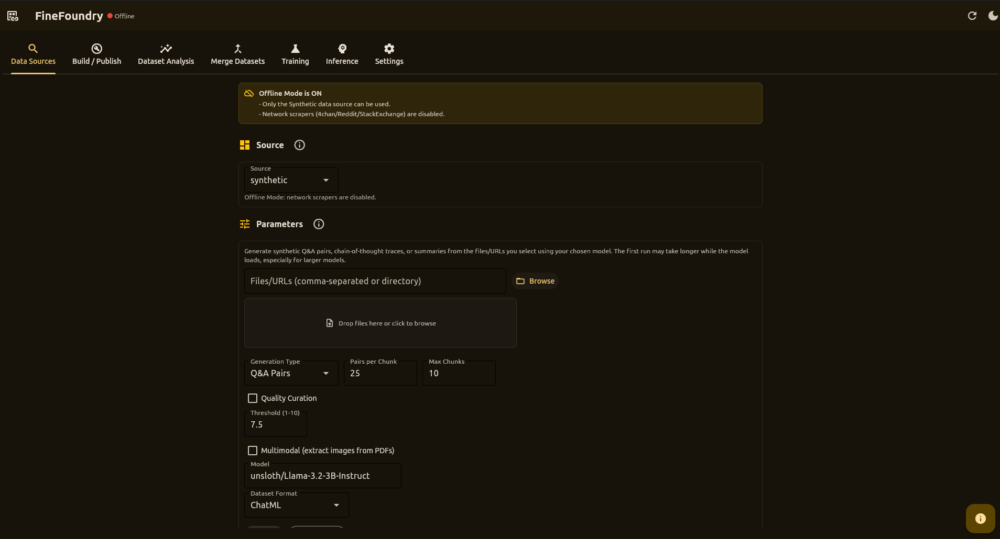
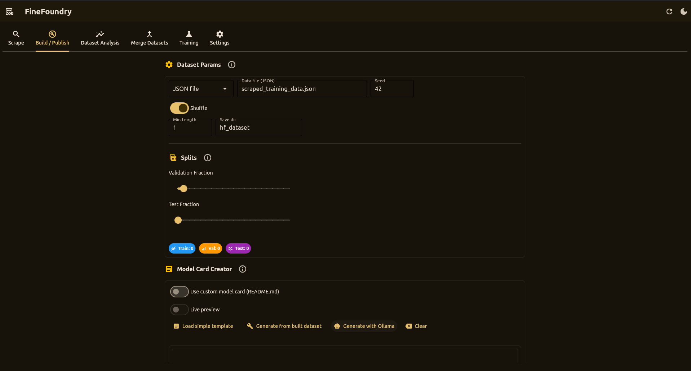
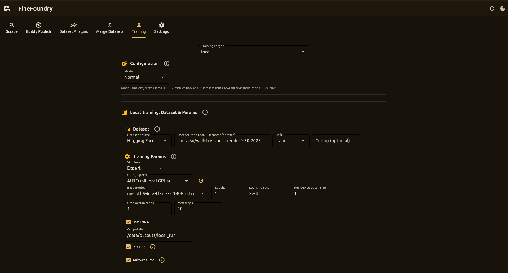
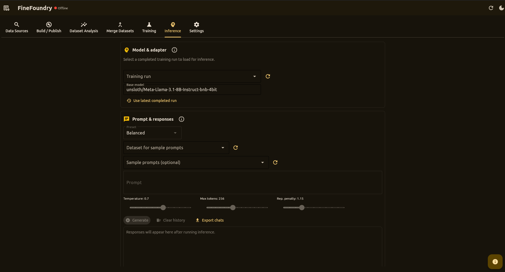
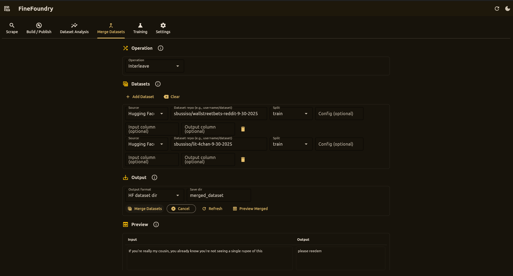
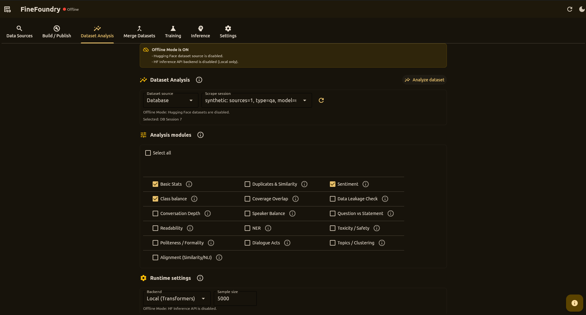

A powerful desktop application to scrape, merge, analyze, build datasets, and fine-tune models with an Unsloth-based LoRA training stack. Train on RunPod or locally, run fully local inference, then ship to Hugging Face Hub.
A complete desktop studio for ML dataset curation and model fine-tuning
FineFoundry is a native desktop application built with Flet that streamlines the entire machine learning data workflow. From scraping raw data to fine-tuning models, everything happens in one intuitive interface.
Everything you need for dataset curation and model fine-tuning
Scrape conversational data from 4chan, Reddit, and Stack Exchange with contextual pairing and robust cleaning.
Combine multiple JSON files or Hugging Face datasets into unified training sets with automatic column mapping.
Analyze datasets with sentiment, toxicity, duplicates, class balance, and data leakage detection modules.
Create train/val/test splits and push to Hugging Face Hub with auto-generated dataset cards.
Train models on RunPod or locally via Docker using an Unsloth-based LoRA fine-tuning stack with shared configs and outputs.
Parameter-efficient fine-tuning with LoRA via Unsloth, packing support, and automatic checkpoint resumption.
Built with Flet for cross-platform native UI
LoRA fine-tuning with PyTorch, Transformers, PEFT, bitsandbytes
Seamless Hugging Face Hub push and pull
Automated pod and network volume management
All processing happens locally on your machine
Quote-chain, cumulative, and adjacent modes
Use as GUI or programmatic API
Open source and free to use
Everything you need to get started with FineFoundry
Clone the repo and run with uv, or use a classic virtualenv.
# Recommended: uv (matches project docs)
git clone https://github.com/SourceBox-LLC/FineFoundry.git FineFoundry-Core
cd FineFoundry-Core
# Install uv if needed
pip install uv
# Run the app (creates an isolated env and installs deps)
uv run src/main.py
# Alternative: classic venv + pip
python -m venv venv
# Activate (Windows PowerShell)
./venv/Scripts/Activate.ps1
# Activate (macOS/Linux)
source venv/bin/activate
# Install dependencies
pip install -r requirements.txtStart the desktop application
# If using uv (recommended)
uv run src/main.py
# If using a virtualenv + pip
python src/main.py
# Or use Flet directly
flet run src/main.pyThe desktop window will open with tabs for Scrape, Build/Publish, Training, Inference, Merge, Analysis, and Settings.
Collect conversational training data from multiple sources with configurable pairing modes.
Multi-board scraping with quote-chain and cumulative pairing
Subreddits or single posts with parent-child threading
Q&A pairs from accepted answers
Create train/val/test splits and publish datasets directly to Hugging Face Hub.
username/my-dataset)Fine-tune LLMs using an Unsloth-based LoRA training stack on RunPod or locally via Docker.
Cloud GPU training with automated pod and network volume management
Train on your local GPU using the same Unsloth trainer image
Both targets use docker.io/sbussiso/unsloth-trainer:latest with:
Run local inference against your fine-tuned adapters with prompt history and Full Chat View.
Powered by the same stack as training:
AutoModelForCausalLM, AutoTokenizer)PeftModel) for adapter loadingCombine multiple datasets from local files or Hugging Face Hub into a unified training set.
Comprehensive quality analysis with togglable modules for different metrics.
Automate FineFoundry workflows with command-line tools and Python APIs.
uv run src/scrapers/reddit_scraper.py \
--url https://www.reddit.com/r/AskReddit/ \
--max-posts 50 \
--mode contextual \
--pairs-path reddit_pairs.jsonuv run src/save_dataset.pyfrom src.scrapers.fourchan_scraper import scrape
pairs = scrape(
board="pol",
max_threads=150,
max_pairs=5000,
mode="contextual",
strategy="cumulative"
)Run training jobs in containers on RunPod or locally.
Default image: docker.io/sbussiso/unsloth-trainer:latest
Cloud GPU training with automated infrastructure
/data/outputs/...Configure authentication, proxies, and integrations.
Join the FineFoundry community
FineFoundry is open source and welcomes contributions! Whether you're adding new scrapers, improving analysis modules, enhancing the UI, or fixing bugs, your input is valuable.
Python 3.10+
Flet
Datasets (HF)
Docker
PyTorch
RunPod
Hugging Face Hub
REST APIs
Unsloth
Transformers
PEFT / LoRA
bitsandbytes